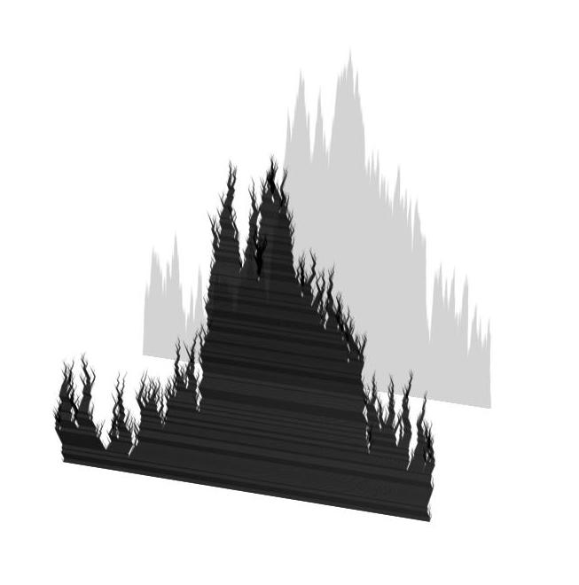

Left: a discrete snake with i.i.d. centered displacements; right: a discrete snake with deterministic globally centered displacements.
Top left: a globally centered discrete snake; bottom left: the head of the discrete snake; right: the trajectories of the discrete snake in depth-first order.